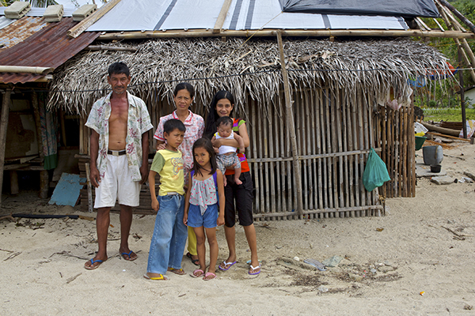
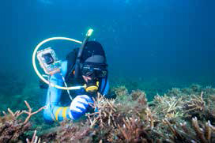

EMERGENCIES
More than 14 million people were affected by Typhoon Haiyan. In one community alone, 90 per cent of housing was destroyed. As part of our emergency response, we provided shelter and household kits to over 55,000 people.
The Ascura family from Polopina pose in front of their house. The roof is now made of tarpaulins provided by Concern Worldwide. Photo: Steve De Neef
LIVELIHOODS
Many coral reefs in the waters of Concepcion were destroyed during Typhoon Haiyan. Fishermen from these islands rely on healthy reefs for their livelihood. Concern has initiated a reef rehabilitation programme to ensure the livelihoods of the local fishermen.
Vincent Potier inspects the floating coral nurseries in the water of Concepcion. The coral fragments can grow safely in these nurseries, eventually they will be moved onto nearby reefs or onto the jackstones installed by Concern. This will help the health of the coral reefs in this region which will aid the fishermen with their livelihood since they depend on healthy reefs for reliable fish catch. Photo: Steve De Neef